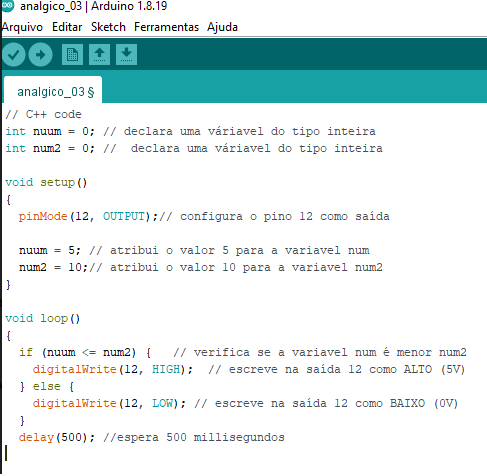

Linguagem de programação C++ para ARDUINO
C++ é uma linguagem de programação compilada multi-paradigma e de uso geral. Desde os anos 1990 é uma das linguagens comerciais mais populares, sendo bastante usada também na academia por seu grande desempenho e base de utilizadores.
A linguagem de programação utilizada
no Arduino é a linguagem C++ (com pequenas modificações), que é uma
linguagem muito tradicional e conhecida.
Exemplo de código C++ no IDE ARDUÌNO

Fonte: O autor
exemplo de código de Blocos no Tinkercad